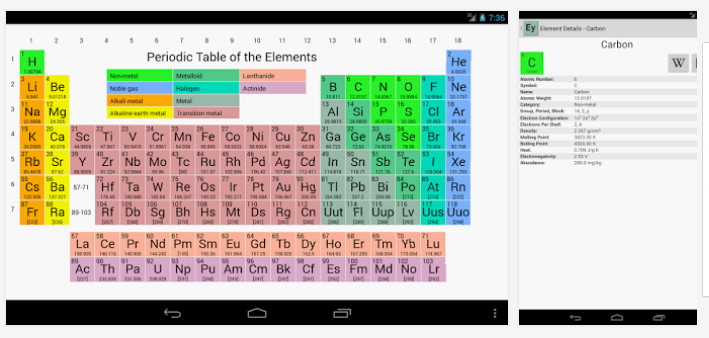

Services & Background Jobs
Android Best Practices: Unit 10
Nitya Narasimhan
References
Android Developers Website
Commonsware Tutorials
#10. Services & Background Jobs
- About Services
- Running in a Background Service
- Loading Data in the Background
- Managing Device Stay Awake State
- Deconstructing a Real App
- Services: Bound Service
- Services: AIDL
Download ThreadSample.zip (local) and Scheduler.zip (local)
Import to ADT and Run as Android Application
#10.1 About Services
- Overview
- The Basics
- Creating a Started Service
- Creating a Bound Service
- Sending Notifications to the User
- Running a Service in the Foreground
- Managing the Lifecycle of a Service
Android Developers Reference
#10.1 Overview
- Headless, Long-Running Jobs
- Continues after app is switched/destroyed
- Can be 'bound' for interactive use
- Examples: Music Player, Feed Updater
CAUTION: Runs in main thread of host process
Android Developers Reference
#10.10 Overview contd..
- Service types = Started, Bound
- Intent activated = startService(), bindService()
- Started = single focus, runs till done/stopped
- Bound = interactive, runs till unbound by all
- Private = declared, limits access to local app
Android Developers Reference
#10.1.0.1 Creating a Service
Subclass Service .Implement these Callbacks:
- onCreate() - initial setup
- onStartCommand() - start service **
- onBind() - return IBinder (or null)
- onUnbind() - last client unbound
- onDestroy() - termination (resource cleanup)
** For unbound services, it's your responsiblity to stop the service
(stopSelf() or stopService()) when the requested work is done.
Android Developers Reference
#10.1.0.2 Service Lifecycle

Android Developers Reference
#10.1.1 The Basics
Declare service in Manifest
...
...
Limit access with permissions: Set 'android:exported' to false.
Android Developers Reference
#10.1.2 Creating a Started Service
- Caller invokes startService, passing Intent
- Service receives Intent in onStartCommand()
- Service runs in main thread of host application
- Use "IntentService" subclass for async worker
- Pro: Simple. Just implement onHandleIntent()
- Con: Queue. Handles only 1 request at a time
Android Developers Reference
#10.1.2.0 Service Modes
onStartCommand() returns service mode (integer)Tells system how to handle restarts
if service killed prematurely
- START_NOT_STICKY do not recreate (unless pending intents)
- START_STICKY recreate (but don't redeliver last intent)
- START_REDILVER_INTENT recreate (and redeliver last intent)
Android Developers Reference
#10.1.2.1 'Managed' Service
public class HelloService extends Service {
private Looper mServiceLooper;
private ServiceHandler mServiceHandler;
// Handler that receives messages from the thread
private final class ServiceHandler extends Handler {
public ServiceHandler(Looper looper) {
super(looper);
}
@Override
public void handleMessage(Message msg) {
// Normally we would do some work here, like download a file.
// For our sample, we just sleep for 5 seconds.
long endTime = System.currentTimeMillis() + 5*1000;
while (System.currentTimeMillis() < endTime) {
synchronized (this) {
try {
wait(endTime - System.currentTimeMillis());
} catch (Exception e) {
}
}
}
// Stop the service using the startId, so that we don't stop
// the service in the middle of handling another job
stopSelf(msg.arg1);
}
}
@Override
public void onCreate() {
// Start up the thread running the service. Note that we create a
// separate thread because the service normally runs in the process's
// main thread, which we don't want to block. We also make it
// background priority so CPU-intensive work will not disrupt our UI.
//
// android.os.HandlerThread is a utility class for starting a new thread
// with a built-in 'looper' to process incoming messges in a loop
HandlerThread thread = new HandlerThread("ServiceStartArguments",
Process.THREAD_PRIORITY_BACKGROUND);
thread.start();
// Get the HandlerThread's Looper and use it for our Handler
//
// Effectively have the utility looper run on the single thread above
// but have it now notify (callback) our custom handler for each message
mServiceLooper = thread.getLooper();
mServiceHandler = new ServiceHandler(mServiceLooper);
}
@Override
public int onStartCommand(Intent intent, int flags, int startId) {
Toast.makeText(this, "service starting", Toast.LENGTH_SHORT).show();
// For each start request, send a message to start a job and deliver the
// start ID so we know which request we're stopping when we finish the job
Message msg = mServiceHandler.obtainMessage();
msg.arg1 = startId;
mServiceHandler.sendMessage(msg);
// If we get killed, after returning from here, restart
return START_STICKY;
}
@Override
public IBinder onBind(Intent intent) {
// We don't provide binding, so return null
return null;
}
@Override
public void onDestroy() {
Toast.makeText(this, "service done", Toast.LENGTH_SHORT).show();
}
}
Android Developers Reference
#10.1.2.2 IntentService (simple)
public class HelloIntentService extends IntentService {
/**
* A constructor is required, and must call the super IntentService(String)
* constructor with a name for the worker thread.
*/
public HelloIntentService() {
super("HelloIntentService");
}
/**
* The IntentService calls this method from the default worker thread with
* the intent that started the service. When this method returns, IntentService
* stops the service, as appropriate.
*/
@Override
protected void onHandleIntent(Intent intent) {
// Normally we would do some work here, like download a file.
// For our sample, we just sleep for 5 seconds.
long endTime = System.currentTimeMillis() + 5*1000;
while (System.currentTimeMillis() < endTime) {
synchronized (this) {
try {
wait(endTime - System.currentTimeMillis());
} catch (Exception e) {
}
}
}
}
}
Android Developers Reference
#10.1.2.3 Activating Services
Intent intent = new Intent(this, HelloService.class);
startService(intent);
The onStartCommand() returns an integer informing System how to handle service restarts after premature termination.
Android Developers Reference
#10.1.2.4 "Local" Service
public class LocalService extends Service {
private NotificationManager mNM;
// Unique Identification Number for the Notification.
// We use it on Notification start, and to cancel it.
private int NOTIFICATION = R.string.local_service_started;
/**
* Class for clients to access. Because we know this service always
* runs in the same process as its clients, we don't need to deal with
* IPC.
*/
public class LocalBinder extends Binder {
LocalService getService() {
return LocalService.this;
}
}
@Override
public void onCreate() {
mNM = (NotificationManager)getSystemService(NOTIFICATION_SERVICE);
// Display a notification about us starting. We put an icon in the status bar.
showNotification();
}
@Override
public int onStartCommand(Intent intent, int flags, int startId) {
Log.i("LocalService", "Received start id " + startId + ": " + intent);
// We want this service to continue running until it is explicitly
// stopped, so return sticky.
return START_STICKY;
}
@Override
public void onDestroy() {
// Cancel the persistent notification.
mNM.cancel(NOTIFICATION);
// Tell the user we stopped.
Toast.makeText(this, R.string.local_service_stopped, Toast.LENGTH_SHORT).show();
}
@Override
public IBinder onBind(Intent intent) {
return mBinder;
}
// This is the object that receives interactions from clients. See
// RemoteService for a more complete example.
private final IBinder mBinder = new LocalBinder();
/**
* Show a notification while this service is running.
*/
private void showNotification() {
// In this sample, we'll use the same text for the ticker and the expanded notification
CharSequence text = getText(R.string.local_service_started);
// Set the icon, scrolling text and timestamp
Notification notification = new Notification(R.drawable.stat_sample, text,
System.currentTimeMillis());
// The PendingIntent to launch our activity if the user selects this notification
PendingIntent contentIntent = PendingIntent.getActivity(this, 0,
new Intent(this, LocalServiceActivities.Controller.class), 0);
// Set the info for the views that show in the notification panel.
notification.setLatestEventInfo(this, getText(R.string.local_service_label),
text, contentIntent);
// Send the notification.
mNM.notify(NOTIFICATION, notification);
}
}
#10.1.2.5 Local Client (no IPC)
private LocalService mBoundService;
private ServiceConnection mConnection = new ServiceConnection() {
public void onServiceConnected(ComponentName className, IBinder service) {
// This is called when the connection with the service has been
// established, giving us the service object we can use to
// interact with the service. Because we have bound to a explicit
// service that we know is running in our own process, we can
// cast its IBinder to a concrete class and directly access it.
mBoundService = ((LocalService.LocalBinder)service).getService();
// Tell the user about this for our demo.
Toast.makeText(Binding.this, R.string.local_service_connected,
Toast.LENGTH_SHORT).show();
}
public void onServiceDisconnected(ComponentName className) {
// This is called when the connection with the service has been
// unexpectedly disconnected -- that is, its process crashed.
// Because it is running in our same process, we should never
// see this happen.
mBoundService = null;
Toast.makeText(Binding.this, R.string.local_service_disconnected,
Toast.LENGTH_SHORT).show();
}
};
void doBindService() {
// Establish a connection with the service. We use an explicit
// class name because we want a specific service implementation that
// we know will be running in our own process (and thus won't be
// supporting component replacement by other applications).
bindService(new Intent(Binding.this,
LocalService.class), mConnection, Context.BIND_AUTO_CREATE);
mIsBound = true;
}
void doUnbindService() {
if (mIsBound) {
// Detach our existing connection.
unbindService(mConnection);
mIsBound = false;
}
}
@Override
protected void onDestroy() {
super.onDestroy();
doUnbindService();
}
#10.1.2.6 Remote Service (Messenger)
public class MessengerService extends Service {
/** For showing and hiding our notification. */
NotificationManager mNM;
/** Keeps track of all current registered clients. */
ArrayList mClients = new ArrayList();
/** Holds last value set by a client. */
int mValue = 0;
/**
* Command to the service to register a client, receiving callbacks
* from the service. The Message's replyTo field must be a Messenger of
* the client where callbacks should be sent.
*/
static final int MSG_REGISTER_CLIENT = 1;
/**
* Command to the service to unregister a client, ot stop receiving callbacks
* from the service. The Message's replyTo field must be a Messenger of
* the client as previously given with MSG_REGISTER_CLIENT.
*/
static final int MSG_UNREGISTER_CLIENT = 2;
/**
* Command to service to set a new value. This can be sent to the
* service to supply a new value, and will be sent by the service to
* any registered clients with the new value.
*/
static final int MSG_SET_VALUE = 3;
/**
* Handler of incoming messages from clients.
*/
class IncomingHandler extends Handler {
@Override
public void handleMessage(Message msg) {
switch (msg.what) {
case MSG_REGISTER_CLIENT:
mClients.add(msg.replyTo);
break;
case MSG_UNREGISTER_CLIENT:
mClients.remove(msg.replyTo);
break;
case MSG_SET_VALUE:
mValue = msg.arg1;
for (int i=mClients.size()-1; i>=0; i--) {
try {
mClients.get(i).send(Message.obtain(null,
MSG_SET_VALUE, mValue, 0));
} catch (RemoteException e) {
// The client is dead. Remove it from the list;
// we are going through the list from back to front
// so this is safe to do inside the loop.
mClients.remove(i);
}
}
break;
default:
super.handleMessage(msg);
}
}
}
/**
* Target we publish for clients to send messages to IncomingHandler.
*/
final Messenger mMessenger = new Messenger(new IncomingHandler());
@Override
public void onCreate() {
mNM = (NotificationManager)getSystemService(NOTIFICATION_SERVICE);
// Display a notification about us starting.
showNotification();
}
@Override
public void onDestroy() {
// Cancel the persistent notification.
mNM.cancel(R.string.remote_service_started);
// Tell the user we stopped.
Toast.makeText(this, R.string.remote_service_stopped, Toast.LENGTH_SHORT).show();
}
/**
* When binding to the service, we return an interface to our messenger
* for sending messages to the service.
*/
@Override
public IBinder onBind(Intent intent) {
return mMessenger.getBinder();
}
/**
* Show a notification while this service is running.
*/
private void showNotification() {
// In this sample, we'll use the same text for the ticker and the expanded notification
CharSequence text = getText(R.string.remote_service_started);
// Set the icon, scrolling text and timestamp
Notification notification = new Notification(R.drawable.stat_sample, text,
System.currentTimeMillis());
// The PendingIntent to launch our activity if the user selects this notification
PendingIntent contentIntent = PendingIntent.getActivity(this, 0,
new Intent(this, Controller.class), 0);
// Set the info for the views that show in the notification panel.
notification.setLatestEventInfo(this, getText(R.string.remote_service_label),
text, contentIntent);
// Send the notification.
// We use a string id because it is a unique number. We use it later to cancel.
mNM.notify(R.string.remote_service_started, notification);
}
}
#10.1.2.7 Remote Client (Messenger)
/** Messenger for communicating with service. */
Messenger mService = null;
/** Flag indicating whether we have called bind on the service. */
boolean mIsBound;
/** Some text view we are using to show state information. */
TextView mCallbackText;
/**
* Handler of incoming messages from service.
*/
class IncomingHandler extends Handler {
@Override
public void handleMessage(Message msg) {
switch (msg.what) {
case MessengerService.MSG_SET_VALUE:
mCallbackText.setText("Received from service: " + msg.arg1);
break;
default:
super.handleMessage(msg);
}
}
}
/**
* Target we publish for clients to send messages to IncomingHandler.
*/
final Messenger mMessenger = new Messenger(new IncomingHandler());
/**
* Class for interacting with the main interface of the service.
*/
private ServiceConnection mConnection = new ServiceConnection() {
public void onServiceConnected(ComponentName className,
IBinder service) {
// This is called when the connection with the service has been
// established, giving us the service object we can use to
// interact with the service. We are communicating with our
// service through an IDL interface, so get a client-side
// representation of that from the raw service object.
mService = new Messenger(service);
mCallbackText.setText("Attached.");
// We want to monitor the service for as long as we are
// connected to it.
try {
Message msg = Message.obtain(null,
MessengerService.MSG_REGISTER_CLIENT);
msg.replyTo = mMessenger;
mService.send(msg);
// Give it some value as an example.
msg = Message.obtain(null,
MessengerService.MSG_SET_VALUE, this.hashCode(), 0);
mService.send(msg);
} catch (RemoteException e) {
// In this case the service has crashed before we could even
// do anything with it; we can count on soon being
// disconnected (and then reconnected if it can be restarted)
// so there is no need to do anything here.
}
// As part of the sample, tell the user what happened.
Toast.makeText(Binding.this, R.string.remote_service_connected,
Toast.LENGTH_SHORT).show();
}
public void onServiceDisconnected(ComponentName className) {
// This is called when the connection with the service has been
// unexpectedly disconnected -- that is, its process crashed.
mService = null;
mCallbackText.setText("Disconnected.");
// As part of the sample, tell the user what happened.
Toast.makeText(Binding.this, R.string.remote_service_disconnected,
Toast.LENGTH_SHORT).show();
}
};
void doBindService() {
// Establish a connection with the service. We use an explicit
// class name because there is no reason to be able to let other
// applications replace our component.
bindService(new Intent(Binding.this,
MessengerService.class), mConnection, Context.BIND_AUTO_CREATE);
mIsBound = true;
mCallbackText.setText("Binding.");
}
void doUnbindService() {
if (mIsBound) {
// If we have received the service, and hence registered with
// it, then now is the time to unregister.
if (mService != null) {
try {
Message msg = Message.obtain(null,
MessengerService.MSG_UNREGISTER_CLIENT);
msg.replyTo = mMessenger;
mService.send(msg);
} catch (RemoteException e) {
// There is nothing special we need to do if the service
// has crashed.
}
}
// Detach our existing connection.
unbindService(mConnection);
mIsBound = false;
mCallbackText.setText("Unbinding.");
}
} #10.1.3 Creating a Bound Service
- Implement onBind() callback
- Return IBinder subclass = service interface
- Client binds to service = gets IBinder
- Client unbinds = system destroys service
Android Developers Reference
#10.1.4 Sending User Notifications
Will be covered in future lecture
on Notifications/Toasts
Android Developers Reference
#10.1.5 Running in Foreground
- If user is actively aware of service (media player)
- Must provide notification in status bar (see code)
- Service calls startForeground(), stopForeground()
Notification notification =
new Notification(R.drawable.icon, getText(R.string.ticker_text),
System.currentTimeMillis());
Intent notificationIntent = new Intent(this, ExampleActivity.class);
PendingIntent pendingIntent = PendingIntent.getActivity(this, 0, notificationIntent, 0);
notification.setLatestEventInfo(this, getText(R.string.notification_title),
getText(R.string.notification_message), pendingIntent);
startForeground(ONGOING_NOTIFICATION_ID, notification);
Android Developers Reference
#10.1.6 Lifecycle Revisited
Android Developers Reference
#10.1.7 Managing Service Lifecycle
public class ExampleService extends Service {
int mStartMode; // indicates how to behave if the service is killed
IBinder mBinder; // interface for clients that bind
boolean mAllowRebind; // indicates whether onRebind should be used
@Override
public void onCreate() {
// The service is being created
}
@Override
public int onStartCommand(Intent intent, int flags, int startId) {
// The service is starting, due to a call to startService()
return mStartMode;
}
@Override
public IBinder onBind(Intent intent) {
// A client is binding to the service with bindService()
return mBinder;
}
@Override
public boolean onUnbind(Intent intent) {
// All clients have unbound with unbindService()
return mAllowRebind;
}
@Override
public void onRebind(Intent intent) {
// A client is binding to the service with bindService(),
// after onUnbind() has already been called
}
@Override
public void onDestroy() {
// The service is no longer used and is being destroyed
}
}
Android Developers Reference
#10.2 The Background Service
Self-Study (Flipped Learning)ThreadSample.zip
- Creating a Background Service
- Sending Work Requests
- Reporting Work Status
Android Developers Reference
#10.2.1 Creating The Service
- Create an Intent Service
- Define the Intent Service in the Manifest
Android Developers Reference
#10.2.2 Sending Work Requests
- Create an Intent Service
- Define the Intent Service in the Manifest
Android Developers Reference
#10.2.3 Reporting Work Status
- Report Status from an IntentService
- Receive Status Broadcasts from an IntentService
Android Developers Reference
#10.3 Loading Data (Background)
Self-Study (Flipped Learning)
ThreadSample.zip
- Running a Query with a Cursor Loader
- Handling the Results
Android Developers Reference
#10.3.1 Query with Cursor Loader
- Define Activity that uses Cursor Loader
- Initialize the Query
- Start the Query
Android Developers Reference
#10.3.2 Handling The Results
- Handle Query Results
- Delete Old Cursor References
Android Developers Reference
#10.4 Managing Device Awake State
Self-Study (Flipped Learning)
Scheduler.zip
- Keeping the Device Awake
- Scheduling Repeating Alarms
Android Developers Reference
#10.4.1 Keeping the Device Awake
- Keep the Screen On
- Keep the CPU On
Android Developers Reference
#10.4.2 Scheduling Repeating Alarms
- Understand the Tradeoffs
- Set a Repeating Alarm
- Cancel an Alarm
- Start an Alarm when the Device Boots
Android Developers Reference
#10.5 Analyzing: 'Elementary'
Self-Study (Flipped Learning)
Install app from Play Store
Check out code from F-Droid
#10.6 Services: Bound Service
- The Basics
- Creating a Bound Service
- Binding to a Service
- Managing the Lifecycle of a Bound Service
Android Developers Reference
#10.6.1 The Basics
Android Developers Reference
#10.6.2 Creating a Bound Service
Android Developers Reference
#10.6.3 Binding to a Service
Android Developers Reference
#10.6.4 Managing the Lifecycle..

Android Developers Reference
#10.7 Services: AIDL
- Defining an AIDL Interface
- Passing Objects over IPC
- Calling an IPC Method
Android Developers Reference
#10.7.1 Defining an AIDL Interface
Android Developers Reference
#10.7.2 Passing Objects Over IPC
Android Developers Reference
#10.7.3 Calling an IPC Method
Android Developers Reference